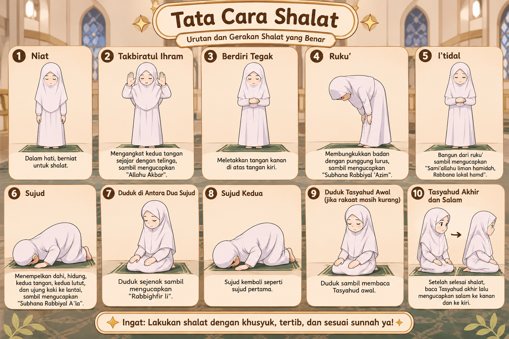

Tata Cara Sholat Sesuai Sunnah

Sifat Sholat Nabi adalah tata cara sholat yang dilakukan oleh Rasulullah ﷺ sebagaimana yang beliau ajarkan kepada para sahabat. Tujuannya agar umat Islam dapat melaksanakan sholat sesuai dengan tuntunan dan sunnah Rasulullah.
Sebagian dari Cara Shalat Nabi shallallahu ‘alaihi wa sallam Diterangkan oleh ‘Aisyah Hadits #274
وَعَنْ عَائِشَةَ رَضِيَ اللهُ عَنْهَا قَالَتْ: كَانَ رَسُولُ اللهِ صَلَّى اللهُ عَلَيْهِ وَسَلَّمَ يَسْتَفْتِحُ الصَّلاَةَ بِالتَّكْبِيرِ، وَالْقِرَاءَةَ: بـِ{{الْحَمْدُ لِلَّهِ رَبِّ الْعَالَمِينَ *}} وَكَانَ إذَا رَكَعَ لَمْ يُشْخِصْ رَأْسَهُ، وَلَمْ يُصَوِّبْهُ، وَلكِنْ بَيْنَ ذلِكَ. وَكَانَ إذَا رَفَعَ مِنَ الرُّكُوعِ لَمْ يَسْجُدْ حَتَّى يَسْتَوِيَ قَائِماً. وَإذَا رَفَعَ مِنَ السُّجودِ لَمْ يَسْجُدْ حَتَّى يَسْتَويَ جَالِساً. وَكَانَ يَقُولُ فِي كُلِّ رَكْعَتَيْنِ التَّحِيَّةَ. وَكَانَ يَفْرِشُ رِجْلَهُ الْيُسْرَى وَيَنْصِبُ الْيُمْنَى. وَكَانَ يَنْهى عَنْ عُقْبَةِ الشَّيْطانِ، وَيَنْهى أَنْ يَفْتَرِشَ الرَّجُلُ ذِرَاعَيْهِ افْتِرَاشَ السَّبُعِ. وَكَانَ يَخْتِمُ الصَّلاَةَ بِالتسْلِيمِ. أَخْرَجَهُ مُسْلِمٌ، وَلَهُ عِلَّةٌ.
Dari ‘Aisyah radhiyallahu ‘anha, ia berkata, “Rasulullah shallallahu ‘alaihi wa sallam biasanya membuka shalat dengan takbir dan memulai bacaan dengan ‘ALHAMDULILLAHI ROBBIL ‘AALAMIIN”. Apabila beliau rukuk, beliau tidak mengangkat kepalanya dan tidak pula menundukkannya, tetapi pertengahan antara keduanya. Apabila beliau bangkit dari rukuk, beliau tidak akan bersujud sampai beliau berdiri tegak. Apabila beliau mengangkat kepala dari sujud, beliau tidak akan bersujud lagi sampai beliau duduk tegak. Pada setiap dua rakaat, beliau selalu membaca tahiyat. Ketika itu kaki kiri diletakkan di lantai dan menegakkan kakinya yang kanan. Beliau melarang duduk ‘uqbah asy-syaithon. Beliau melarang lengan tangan diletakkan di tanah seperti duduknya binatang buas. Beliau mengakhiri shalat dengan salam.” (HR. Muslim dan hadits ini memiliki ‘illah, yaitu cacat). [HR. Muslim, no. 498. Hadits ini secara zhahir sahih, tetapi ada ‘illah, cacat. Karena Abul Jauza’, yang mana nama aslinya adalah Aus bin ‘Abdullah Ar-Raba’i tidak mendengar dari ‘Aisyah. Ibnu ‘Adi dan Ibnu ‘Abdil Barr menyebutkan seperti itu. Namun, ada kemungkinann Abul Jauza itu mendengar langsung karena masih semasa. Inilah yang dimaksudkan oleh Imam Muslim. Namun, sejatinya perawi tidak berjumpa dengan yang ia riwayatkan darinya atau tidak mendengarnya secara langsung. Oleh karena itu, hadits ini mursal. Wallahu a’lam].
Keterangan hadits:
“كَانَ رَسُولُ اللهِ صَلَّى اللهُ عَلَيْهِ وَسَلَّمَ يَسْتَفْتِحُ الصَّلاَةَ بِالتَّكْبِيرِ”,
Rasulullah shallallahu ‘alaihi wa sallam biasanya membuka shalat dengan takbir. Kaana itu fiil madhi naaqish. Jika khabar kaana itu fiil mudhari’, itu menunjukkan istimror (terus menerus dilakukan), selama tidak ada hal yang menyatakan lain. Yang dimaksud membuka shalat dengan takbir di sini adalah takbiratul ihram.
“وَالْقِرَاءَةَ: بـِ{{الْحَمْدُ لِلَّهِ رَبِّ الْعَالَمِينَ *}}”,
dan memulai bacaan dengan ‘ALHAMDULILLAHI ROBBIL ‘AALAMIIN”, berarti beliau membaca surah Al-Fatihah.
“وَكَانَ إذَا رَكَعَ لَمْ يُشْخِصْ رَأْسَهُ، وَلَمْ يُصَوِّبْهُ”,
apabila beliau rukuk, beliau tidak mengangkat kepalanya dan tidak pula menundukkannya, tetapi pertengahan antara keduanya, maksudnya ketika rukuk, kepala tidak terlalu diangkat, tidak terlalu diturunkan, tetapi kepala dalam keadaan lurus dengan punggung.
“وَكَانَ يَنْهى عَنْ عُقْبَةِ الشَّيْطانِ”,
beliau melarang duduk ‘uqbah asy-syaithon (disebut pula: ‘aqiba asy-syaithon), maksudnya ada tiga bentuk:
telapak kaki diletakkan di lantai, di mana kedua punggung telapak kaki ke arah lantai, lalu duduk di atas tumit. kaki melekat pada pantat dengan tanah, lalu menegakkan betis dan pahanya, lalu telapak tangan di lantai. meletakkan pantat di atas tumit, seperti dilakukan saat duduk antara dua sujud, yang disebut duduk iq’a’. Duduk iq’a’ ini tidak terlarang.
Faedah hadits
Hadits ini jadi dalil wajibnya membuka shalat dengan takbir, yaitu takbiratul ihram dengan lafaz “ALLOHU AKBAR”. Sehingga membuka shalat itu dengan niat dan takbir. Hikmah membuka shalat dengan takbir adalah orang yang shalat menghadirkan hati bahwa ia sedang menghadap Allah Yang Mahabesar. Allah itu Mahabesar dari segala sesuatu yang terlintas dalam pikirannya. Menghadirkan seperti ini berarti seseorang itu khusyuk dan malu jika ia menyibukkan diri dengan selain Allah saat shalat. Membaca surah dalam shalat dimulai dengan surah Al-Fatihah. Seandainya ada bagian Al-Qur’an yang lain yang dibaca sebelum surah Al-Fatihah tidak dianggap. Antara takbiratul ihram dan bacaan surah tetap ada bacaan iftitah. Dalam catatan kaki Al-Yaqut An-Nafiis fii Madzhab Ibni Idris (hlm. 74, terbitan Dar Al-Minhaj) disebutkan bahwa membaca iftitah jadi gugur ketika sudah terlanjur membaca ta’awudz walaupun meninggalkan iftitah karena lupa. Iftitah juga jadi gugur jika makmum masbuk baru masuk ketika duduk bersama imam. Sedangkan, jika makmum masbuk masuknya ketika mengucapkan amin (aamiin) bersama imam, maka tetap dianjurkan membaca iftitah. Rukuk yang sesuai sunnah—sebagaimana diterangkan sebelumnya—adalah kepala rata dengan punggung, kepala tidak diangkat lebih dari rata punggung atau tunduk lebih rendah dari punggung. Ketika bangkit dari rukuk diperintahkan berdiri sejenak (thumakninah) dan ketika bangkit dari sujud lalu duduk antara dua sujud diperintahkan duduk sejenak (thumakninah). Hal ini telah dijelaskan pula dari sunnah Nabi shallallahu ‘alaihi wa sallam, dijelaskan dari lisan Nabi shallallahu ‘alaihi wa sallam dan praktik beliau. Membaca tahiyat disyariatkan di akhir setiap dua rakaat. Jika shalat hanya dua rakaat, diakhiri dengan tasyahhud lalu salam. Jika lebih dari dua rakaat, setelah tasyahud awal dilanjutkan mengerjakan rakaat selanjutnya, lalu tasyahhud kemudian salam. Ketika duduk antara dua sujud dan duduk tasyahhud awal, duduknya adalah iftirosy, yaitu meletakkan kaki kiri di lantai, menegakkan kaki kanan ketika duduk. Adapun tasyahhud akhir, duduknya adalah tawaruk yaitu mengeluarkan kaki kiri dan menegakkan kaki kanan dan duduk pada lantai. Inilah cara duduk yang disebutkan dalam madzhab Imam Syafii. Sedangkan dalam madzhab Imam Ahmad, duduk tawaruk barulah ada untuk duduk yang memiliki dua kali tasyahhud. Dilarang duduk ‘uqbah syaithan adalah duduk pada tumit sedangkan dua kaki dibentangkan di tanah. Ada juga tafsiran duduk ‘uqbah syaithan adalah kaki melekat pada pantat dengan tanah, lalu menegakkan betis dan pahanya, lalu telapak tangan di lantai. Yang jelas duduk ‘uqbah syaithan jenis pertama tidak bisa membuat seseorang duduk sejenak di lantai. Hadits ini juga menunjukkan larangan meletakkan lengan bawah di lantai saat sujud. Yang disunnahkan adalah mengangkat kedua lengan tersebut saat sujud. Yang diletakkan di lantai adalah dua telapak tangan. Sujud dengan meletakkan lengan di lantai menunjukkan shalat orang yang malas serta tasyabuh (meniru-niru) hewan buas dan anjing.
Dalam hadits Anas radhiyallahu ‘anhu, Rasulullah shallallahu ‘alaihi wa sallam bersabda,
اعْتَدِلُوا فِى السُّجُودِ ، وَلاَ يَبْسُطْ أَحَدُكُمْ ذِرَاعَيْهِ انْبِسَاطَ الْكَلْبِ
“Bersikaplah pertengahan ketika sujud. Janganlah salah seorang di antara kalian menempelkan lengannya di lantai seperti anjing yang meletakkan lengannya di lantai.” (HR. Bukhari, no. 822 dan Muslim, no. 493)
Keadaan Tangan Ketika Sujud
Menutup shalat adalah dengan salam.
Bacaan salam paling singkat adalah: ASSALAAMU ‘ALAIKUM.
Bacaan salam paling sempurna adalah: ASSALAMU ‘ALAIKUM WA ROHMATULLAH.
Dari Abu Sa’id Al-Khudri radhiyallahu ‘anhu, Rasulullah shallallahu ‘alaihi wa sallam bersabda,
مِفْتَاحُ الصَّلاَةِ الطُّهُورُ وَتَحْرِيمُهَا التَّكْبِيرُ وَتَحْلِيلُهَا التَّسْلِيمُ
“Pembuka shalat adalah bersuci, yang mengharamkan dari perkara di luar shalat adalah ucapan takbir dan yang menghalalkan kembali adalah ucapan salam.” (HR. Tirmidzi, no. 238 dan Ibnu Majah, no. 276. Abu ‘Isa mengatakan bahwa hadits ini hasan. Syaikh Al-Albani mengatakan bahwa hadits ini sahih).
Cara salam adalah dengan memalingkan wajah ke kanan sampai orang di belakang melihat pipi, begitu pula salam ke kiri sampai orang di belakang melihat pipi. Disebutkan dalam hadits,
عَنْ عَامِرِ بْنِ سَعْدٍ عَنْ أَبِيهِ قَالَ كُنْتُ أَرَى رَسُولَ اللَّهِ -صلى الله عليه وسلم- يُسَلِّمُ عَنْ يَمِينِهِ وَعَنْ يَسَارِهِ حَتَّى أَرَى بَيَاضَ خَدِّهِ
Dari ‘Amir bin Sa’ad dari bapaknya, ia berkata, “Aku pernah melihat Rasulullah shallallahu ‘alaihi wa sallam mengucapkan salam ke kanan dan ke kiri hingga aku melihat pipinya yang putih.” (HR. Muslim, no. 582).
Dari ‘Abdullah bin Mas’ud radhiyallahu ‘anhu, ia berkata,
أَنَّ النَّبِىَّ -صلى الله عليه وسلم- كَانَ يُسَلِّمُ عَنْ يَمِينِهِ وَعَنْ شِمَالِهِ حَتَّى يُرَى بَيَاضُ خَدِّهِ « السَّلاَمُ عَلَيْكُمْ وَرَحْمَةُ اللَّهِ السَّلاَمُ عَلَيْكُمْ وَرَحْمَةُ اللَّهِ »
“Nabi shallallahu ‘alaihi wa sallam biasa mengucapkan salam ke kanan dan ke kiri sampai terlihat pipinya yang putih, lalu beliau mengucapkan, ‘ASSALAAMU ‘ALAIKUM WA ROHMATULLAH, ASSALAAMU ‘ALAIKUM WA ROHMATULLAH’ (artinya: Keselamatan dan rahmat Allah bagi kalian, keselamatan dan rahmat Allah bagi kalian).” (HR. Abu Daud, no. 996 dan Tirmidzi, no. 295. Al-Hafizh Abu Thahir mengatakan bahwa hadits ini sahih).